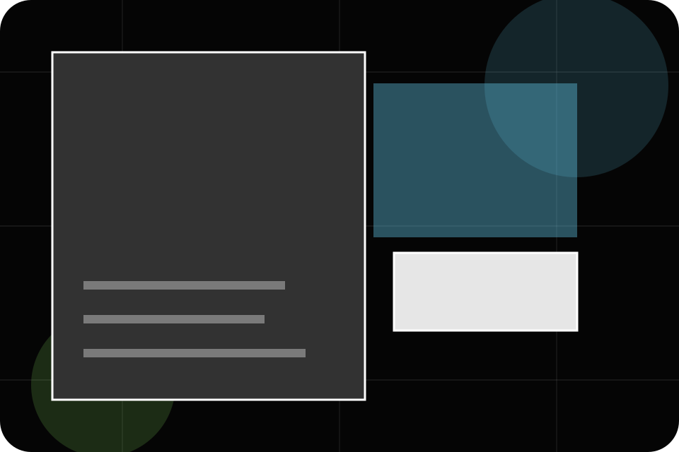
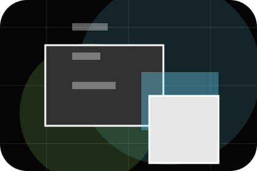
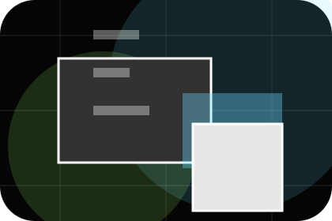
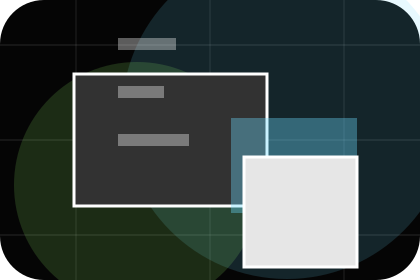
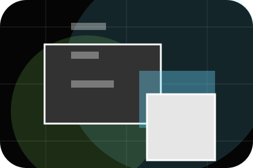
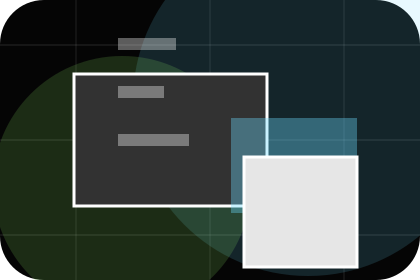
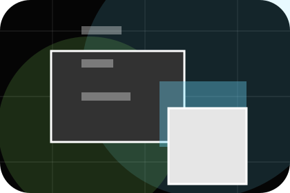
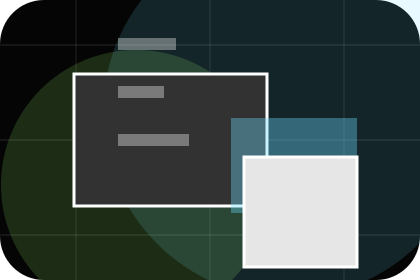
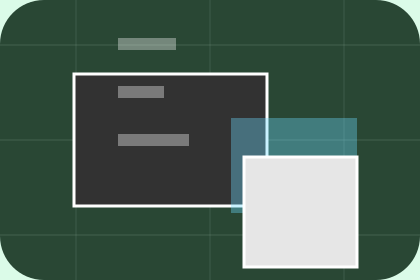

Guide
A useful entry point for visitors who need more context before they send a campaign brief.
Insights / 01
Insights opens as a clear marketing decision hub: what Spark offers, who it helps, why it matters, and which route to take first.
The first screen combines positioning, proof, primary action, and fast internal navigation, so people can act immediately or compare the rest of the insights route with context.
Immersive case-study hero
Select the closest route and Spark keeps the next step, proof, and follow-up expectation aligned with results and creative confidence.

Insights / 02
Trends gives researching visitors a practical route into guides, checklists, and comparison material without leaving the site structure.
Each resource behaves like a useful internal link, giving cold and warm visitors a way to learn, compare, and return to the action path.
Explore InsightsA useful entry point for visitors who need more context before they send a campaign brief.

A scannable comparison aid that makes research usable before the next decision.
A route back to support, services, or contact when the visitor is ready to act.
Insights / 03
Guides gives researching visitors a practical route into guides, checklists, and comparison material without leaving the site structure.
Each resource behaves like a useful internal link, giving cold and warm visitors a way to learn, compare, and return to the action path.
View ResourcesA useful entry point for visitors who need more context before they send a campaign brief.
A scannable comparison aid that makes research usable before the next decision.
A route back to support, services, or contact when the visitor is ready to act.
A useful entry point for visitors who need more context before they send a campaign brief.
Open resourceA scannable comparison aid that makes research usable before the next decision.
Open resource
BriefA route back to support, services, or contact when the visitor is ready to act.
Open resourceInsights / 04
Frameworks gives researching visitors a practical route into guides, checklists, and comparison material without leaving the site structure.
Each resource behaves like a useful internal link, giving cold and warm visitors a way to learn, compare, and return to the action path.
Explore InsightsA useful entry point for visitors who need more context before they send a campaign brief.
A scannable comparison aid that makes research usable before the next decision.

A route back to support, services, or contact when the visitor is ready to act.
Insights / 05
Analysis gives researching visitors a practical route into guides, checklists, and comparison material without leaving the site structure.
Each resource behaves like a useful internal link, giving cold and warm visitors a way to learn, compare, and return to the action path.
Explore InsightsA useful entry point for visitors who need more context before they send a campaign brief.
Insights / 06
Campaigns gives researching visitors a practical route into guides, checklists, and comparison material without leaving the site structure.
Each resource behaves like a useful internal link, giving cold and warm visitors a way to learn, compare, and return to the action path.
Explore InsightsA useful entry point for visitors who need more context before they send a campaign brief.

A scannable comparison aid that makes research usable before the next decision.

A route back to support, services, or contact when the visitor is ready to act.
Insights / 07
Tips gives researching visitors a practical route into guides, checklists, and comparison material without leaving the site structure.
Each resource behaves like a useful internal link, giving cold and warm visitors a way to learn, compare, and return to the action path.
Explore InsightsA useful entry point for visitors who need more context before they send a campaign brief.
A scannable comparison aid that makes research usable before the next decision.
A route back to support, services, or contact when the visitor is ready to act.
Insights / 08
Downloads gives researching visitors a practical route into guides, checklists, and comparison material without leaving the site structure.
Each resource behaves like a useful internal link, giving cold and warm visitors a way to learn, compare, and return to the action path.
View ResourcesA useful entry point for visitors who need more context before they send a campaign brief.
A scannable comparison aid that makes research usable before the next decision.
A route back to support, services, or contact when the visitor is ready to act.
A useful entry point for visitors who need more context before they send a campaign brief.
Open resource
ChecklistA scannable comparison aid that makes research usable before the next decision.
Open resource
BriefA route back to support, services, or contact when the visitor is ready to act.
Open resourceInsights / 09
Read gives researching visitors a practical route into guides, checklists, and comparison material without leaving the site structure.
Each resource behaves like a useful internal link, giving cold and warm visitors a way to learn, compare, and return to the action path.
Explore InsightsA useful entry point for visitors who need more context before they send a campaign brief.
Insights / 10
Spark closes the insights route with a clear action, a quick reminder of the value, and a low-friction way to send a campaign brief.
Visitors who are ready can use the primary action. Visitors who are still comparing can scan the section links, proof, and support routes before they send a campaign brief.
Send Campaign BriefThe final block keeps the choice simple: act now, compare one more proof route, or send enough detail for a focused response.
Send Campaign Briefresults and creative confidence
A marketing agency site with immersive black work panels, sharp case filters, results proof, and brief routes. Insights ends with a direct path to send a campaign brief, plus enough context for visitors who still need to compare.

Send Campaign BriefInformation is provided for planning and should be reviewed for the final client, location, and operating rules.